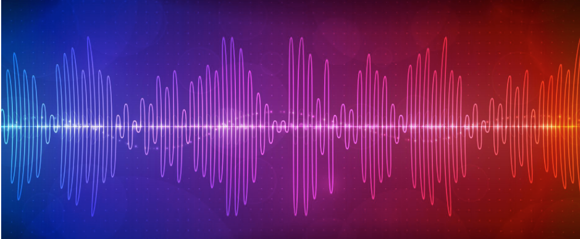
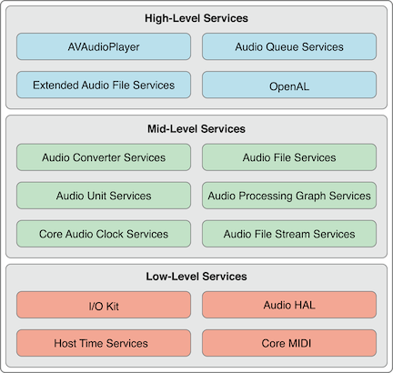

现实生活中，我们听到的声音都是时间连续的，我们称为这种信号叫模拟信号。模拟信号需要进行数字化以后才能在计算机中使用。目前我们在计算机上进行音频播放都需要依赖于音频文件。
音频文件的生成过程是将声音信息采样、量化和编码产生的数字信号的过程。人耳所能听到的声音，最低的频率是从20Hz起一直到最高频率20KHZ，因此音频文件格式的最大带宽是20KHZ。根据奈奎斯特的理论，只有采样频率高于声音信号最高频率的两倍时，才能把数字信号表示的声音还原成为原来的声音，所以音频文件的采样率一般在40~50KHZ，比如最常见的CD音质采样率44.1KHZ。
对声音进行采样、量化过程被称为脉冲编码调制（Pulse Code Modulation），简称PCM。PCM数据是最原始的音频数据完全无损，所以PCM数据虽然音质优秀但体积庞大，为了解决这个问题先后诞生了一系列的音频格式，这些音频格式运用不同的方法对音频数据进行压缩，其中有无损压缩（ALAC、APE、FLAC）和有损压缩（MP3、AAC、OGG、WMA）两种。
位速/比特率/码率描述的都是一个东西，是指在一个数据流中每秒钟能通过的信息量，代表了压缩质量，比如MP3常用码率有128kbit/s、160kbit/s、320kbit/s等等，越高代表着声音音质越好。MP3中的数据有ID3和音频数据组成，ID3用于存储歌名、演唱者、专辑、音轨等我们可以常见的信息。
模拟信号 -> 输入设备（传递电压值）-> 声卡(经过采样跟量化（即设置声音大小等各种值）) -> 磁盘（文件） -> 声卡 -> 输出设备 -> 模拟信号
我们声音在物理上用波形表示，那么我们将这些波形称作为模拟信号。而我们计算机磁盘只能存储（01010101）的格式。我们将模拟信号转换成能够被磁盘存储的格式（010101）称之为数字信号。这个转换的过程我们叫模数转换。
我们发出来的声音（模拟信号）是连续的，我们如果要一直的对模拟信号进行转化，产生的数字信号会很大。那么我们就要采样，而采样精度就是每秒计算机对模拟信号进行采样的次数。最常见的采样精度就是上面提到的44.1khz/s,这个是经过大师们多年研究得出的数据，低于这个数据，效果就会很差，而高于这个数据，效果的差距不是很明显。
采样后会后是变成了（0101010110100101…），那声音的音量是有大小的，那这串数据，怎样表示声音的大小呢？ 这就涉及到了比特率，它是指在一个数据流中每秒钟能通过的信息量。 比特率就是将声音的大小划分为多少等级。举例下：8比特，在二进制中，表示有8位，表示的十进制的值就是0（00000000）～256（11111111），那每个数值就代表着一个声音大小。
过程可以简化为：波形在经过输入设备的时候，会产生电压值。声卡通过计算采样率、比特率，以每秒几次的频率去获取这些电压值，然后将这些电压值以几bit的形式转换成数字信号。计算机将数据格式存储为文件。
文件是用来装数字信号的，文件包括了比特率、采样率、声道、编码方式、以及被编码过后的数字信号。
文件格式就是制造者自己规定的一种名称，在每个文件格式都会特定支持几种编码格式。打个比方就是文件就是一个容器，里面可以装不同的水，有的可以装一种，有的可以装好几种。
经过采样后的数字信号很大，有时候我们不需要这么大的，所以我们就要进行编码压缩，当然压缩技术都是有损的。在不大影响音频的效果的情况下，舍弃掉一些高频或者低频的数据。
采样频率是指单位时间内对声音模拟信号的采样次数。采样率类似于视频的帧数，比如电影的采样率是24Hz。当我们把采样到的一个个静止画面再以采样率同样的速度回放时，看到的就是连续的画面。同样的道理，把以44.1kHZ采样率记录的CD以同样的速率播放时，就能听到连续的声音。显然，这个采样率越高，听到的声音和看到的图像就越连贯。
采样位数可以理解为采集卡处理声音的解析度。电脑中的声音文件是用数字0和1来表示的。连续的模拟信号按一定的采样频率经数码脉冲取样后，每一个离散的脉冲信号被以一定的量化精度量化成一串二进制编码流，这串编码流的位数即为采样位数，也称为量化精度。
可以理解为每种音频格式不同的编解码方式，而iOS下这些编码方式被集中到一个枚举中.
CF_ENUM(AudioFormatID)
{
kAudioFormatLinearPCM = 'lpcm',
kAudioFormatAC3 = 'ac-3',
kAudioFormat60958AC3 = 'cac3',
kAudioFormatAppleIMA4 = 'ima4',
kAudioFormatMPEG4AAC = 'aac ',
kAudioFormatMPEG4CELP = 'celp',
kAudioFormatMPEG4HVXC = 'hvxc',
kAudioFormatMPEG4TwinVQ = 'twvq',
kAudioFormatMACE3 = 'MAC3',
kAudioFormatMACE6 = 'MAC6',
kAudioFormatULaw = 'ulaw',
kAudioFormatALaw = 'alaw',
kAudioFormatQDesign = 'QDMC',
kAudioFormatQDesign2 = 'QDM2',
kAudioFormatQUALCOMM = 'Qclp',
kAudioFormatMPEGLayer1 = '.mp1',
kAudioFormatMPEGLayer2 = '.mp2',
kAudioFormatMPEGLayer3 = '.mp3',
kAudioFormatTimeCode = 'time',
kAudioFormatMIDIStream = 'midi',
kAudioFormatParameterValueStream = 'apvs',
kAudioFormatAppleLossless = 'alac',
kAudioFormatMPEG4AAC_HE = 'aach',
kAudioFormatMPEG4AAC_LD = 'aacl',
kAudioFormatMPEG4AAC_ELD = 'aace',
kAudioFormatMPEG4AAC_ELD_SBR = 'aacf',
kAudioFormatMPEG4AAC_ELD_V2 = 'aacg',
kAudioFormatMPEG4AAC_HE_V2 = 'aacp',
kAudioFormatMPEG4AAC_Spatial = 'aacs',
kAudioFormatAMR = 'samr',
kAudioFormatAMR_WB = 'sawb',
kAudioFormatAudible = 'AUDB',
kAudioFormatiLBC = 'ilbc',
kAudioFormatDVIIntelIMA = 0x6D730011,
kAudioFormatMicrosoftGSM = 0x6D730031,
kAudioFormatAES3 = 'aes3',
kAudioFormatEnhancedAC3 = 'ec-3'
};
比较通俗的理解：封装格式和编码的关系，就是和酒瓶与酒的关系差不多，而播放器就是开酒器。为了可以喝更好的酒，最好先了解酒是什么酒，酒瓶是什么酒瓶，怎么使用开酒器开酒瓶，码率或者可以比喻做酒的原料。对于同一个酒瓶和做同一种酒的情况下，如果原料太少，又要要求用酒把酒瓶灌满，此时只好兑水了，酒的品质就会变差了。然而，如果原料太多，又会造成原料浪费。所以要做好酒，我们就需要充足的原料。
封装格式就是文件格式，编码就是编码格式。
这里以播放MP3文件为例：
采集和量化的过程和上面的过程基本相反。
iOS对音频处理的封装 
上述模块接口说明：
EZAudio这是OC版本，目前已经不再维护。作者转向了Swift项目AudioKit。这个库也很牛逼。
AAC 到 PCM 音频解码
使用AudioToolbox播放AAC
IOS开发笔记之音频（一）
iOS音频系列(四)–音频的文件格式和数据格式 基本概念解释
iOS音频系列(一)–音频基础 对一些基本概念的解释
iOS音频播放系列 强力推荐 🎯
iOS音频编程之实时语音通信用到了一些偏底层的
iOS直播系列
iOS在线音频流播放这个作者也是非常牛逼，关于图像处理和音频处理的都可以看看。